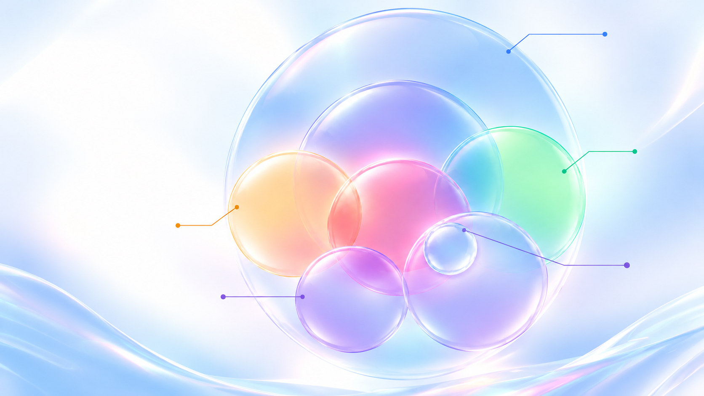

El futuro ya está aquí.
No llegó con robots en las calles. Llegó a nuestros bolsillos y empezó a formar parte de la rutina.
Reuniones, documentos, informes. Rara vez nos detenemos a pensar en la magnitud de lo que está cambiando.
La inteligencia artificial ya no es una promesa lejana. Está aquí, hoy, y su impacto es más profundo de lo que imaginamos.
Y estamos tan ocupados viviendo en él que todavía no nos hemos dado cuenta.
El mejor artesano solo tiene dos manos. Su capacidad está limitada por su tiempo y su esfuerzo.
Las personas empezaron a organizar procesos, diseñar maquinaria y coordinar operaciones. La tecnología cambió lo que éramos capaces de fabricar.
Antes creábamos herramientas para levantar más y trabajar más rápido. Hoy desarrollamos tecnologías que ayudan a analizar información, reconocer patrones e interpretar imágenes.
La verdadera oportunidad no está en hacer más rápido lo mismo, sino en descubrir qué cosas nuevas podemos hacer.
La inteligencia artificial no comenzó con ChatGPT. Y tampoco termina allí.
Recomendaciones, detección de fraude, reconocimiento de imágenes, predicción. Convivíamos con ella sin reconocerla.
La IA puede usar información para comprender, anticipar y ayudar a decidir.

Es una aplicación dentro de un campo mucho más amplio, con técnicas que se complementan y se superponen.
Ya no usamos una herramienta para responder una pregunta: combinamos capacidades para construir una solución.
¿De la cantidad de documentos que procesamos? ¿O de los problemas que ayudamos a resolver?
La IA puede encargarse de parte de la rutina y liberar más espacio para el análisis, el criterio y la creación de soluciones.
La IA ejecuta más rápido lo que ya hacíamos. Mejoramos la ejecución, pero el proceso de fondo sigue igual.
Dejar de pensar solo en cómo completar la tarea y comprender el problema que existe detrás de ella.
Una capacidad reutilizable y mejorable, que detecta el problema y ayuda a resolverlo sin repetir los mismos pasos cada semana.
¿Cómo resolvemos este problema?
¿Qué problema deberíamos resolver?
¿Cómo lo resolvemos continuamente?
El beneficio deja de limitarse a una tarea individual: se extiende a muchas personas y se mantiene en el tiempo.
No solo qué tareas harán las máquinas, sino qué cosas podremos hacer nosotros que antes no podíamos.
No solo lo que la inteligencia artificial puede hacer. Es lo que nosotros decidimos hacer posible con ella.